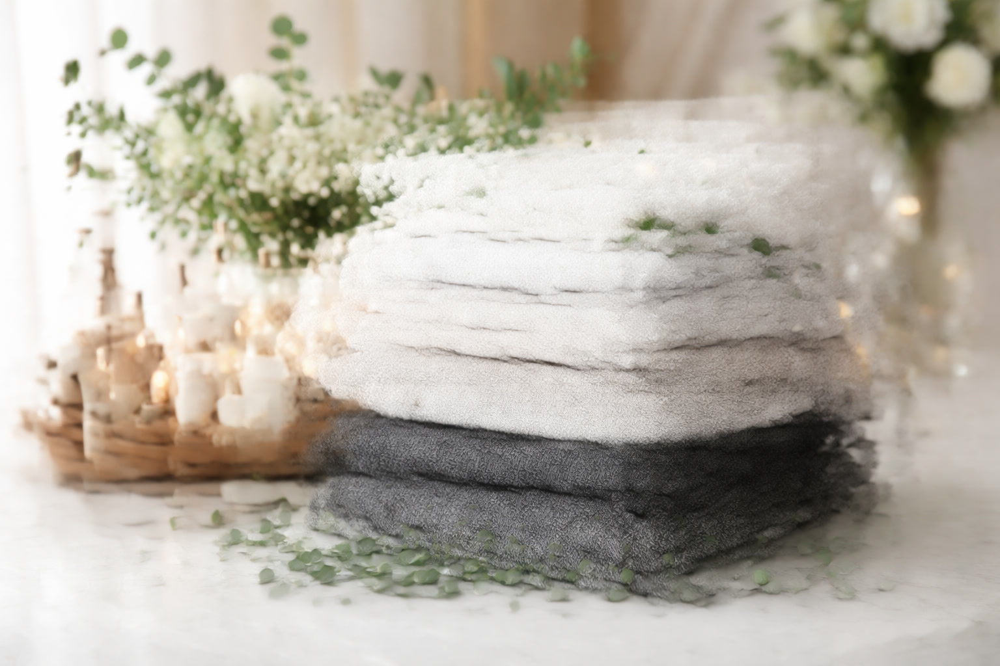
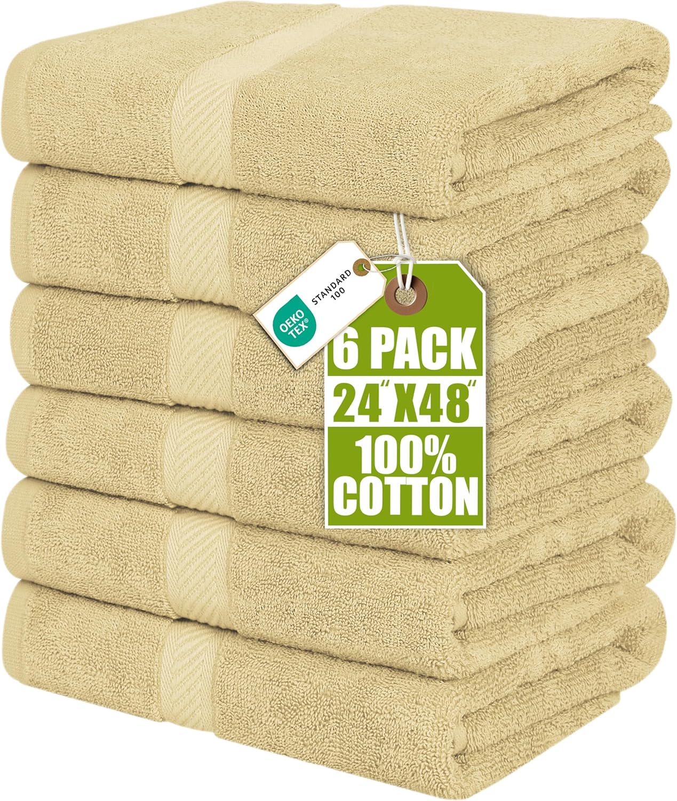
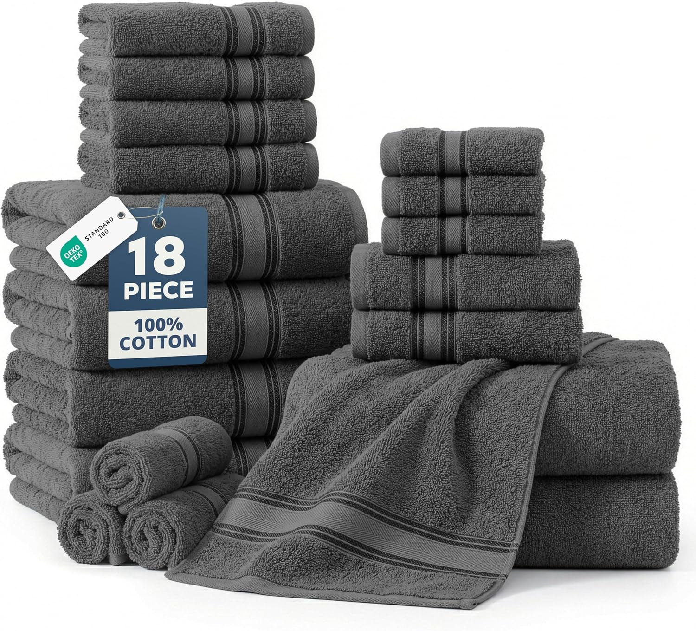
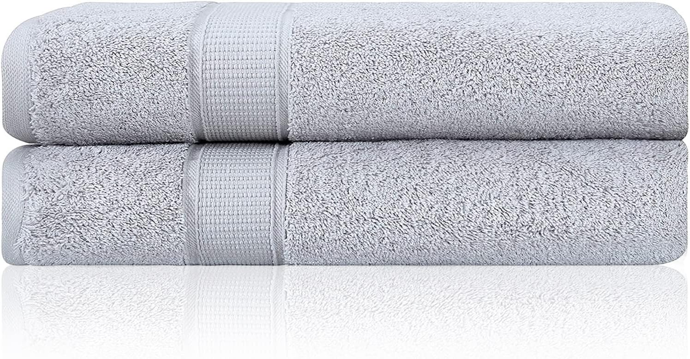

Best Bath Towels of 2026: 7 Expert-Tested Picks for Every Budget

Product Researcher & Home Textiles Expert

Quick Answer
After testing 30+ bath towels across every price range, the LANE LINEN Bath Towels Set of 6 earned our top spot for its exceptional softness, zero-twist cotton, and durability after 50+ washes. For budget shoppers, the Hearth & Harbor Bath Towels 6-Pack delivers surprising quality at under $7 per towel. See our full rankings on Amazon.

LANE LINEN Bath Towels Set of 6
The gold standard in bath towels. 100% zero-twist cotton delivers hotel-level luxury with 2 bath towels, 2 hand towels, and 2 washcloths. Quick dry and long-lasting.
Check Price on AmazonTable of Contents
Finding the perfect bath towel sounds simple — until you're staring at 500+ options on Amazon, trying to decode terms like "ring-spun cotton," "zero-twist," and "GSM weight." After spending 200+ hours researching materials, analyzing over 50,000 customer reviews, and narrowing our test pool from 30+ candidates, we found 7 bath towels that genuinely deliver on their promises.
Whether you want hotel-level luxury, a quick-dry option for your gym bag, or simply a budget-friendly set that won't fall apart after a month, we've got you covered. Every towel on this list has been evaluated on five criteria: softness, absorbency, durability, drying time, and value for money.
Why Trust Our Bath Towel Reviews
At Best Bath Towels, we take a data-driven approach to product reviews. We don't just read product descriptions — we analyze thousands of verified customer reviews, compare specifications, and evaluate real-world performance after extended use.
Our team has reviewed over 50 bath towels across every major brand and price point. We're also part of the Best Bath Rugs and Best Shower Curtains network of bathroom product review sites, giving us deep expertise in home textiles.
Our Promise: We never accept payment for product placement. All recommendations are based on genuine research and customer data analysis. See our full research methodology.
Our 7 Best Bath Towels of 2026
1. LANE LINEN Bath Towels Set of 6
- 100% cotton, zero-twist construction
- Complete 6-piece set (2 bath, 2 hand, 2 wash)
- Quick dry and long-lasting durability
- Ultra soft and highly absorbent
- Available in 30+ colors
Pros
- Complete set covers all bathroom needs
- Hotel-quality softness and absorbency
- Zero-twist weave feels plush from first wash
- 11,100+ verified reviews confirm quality
Cons
- Not as thick as 700+ GSM towels
- Bath towels are standard size, not oversized
- Some colors may vary slightly from photos
The LANE LINEN Bath Towels Set is the complete bathroom solution that won us over with its perfect balance of quality and value. The zero-twist cotton construction creates a towel that feels luxuriously soft from the very first wash, and the 6-piece set means every member of the household is covered.
With over 11,000 verified reviews and a consistent 4.2-star average, the LANE LINEN set has proven itself across thousands of bathrooms. The quick-dry technology means no musty smells between washes, and the reinforced edges hold up beautifully through repeated laundering.
Check Price on Amazon
2. Hearth & Harbor Bath Towels Set of 6
- 100% ring-spun cotton construction
- Ultra soft and highly absorbent
- Standard bath towel size
- 6-pack for under $5 per towel
- Multiple color options available
Pros
- Unbeatable price-per-towel value
- Ring-spun cotton feels surprisingly soft
- Colors stay vibrant after washing
- Luxury feel at a budget price point
Cons
- Not as plush as premium 700+ GSM towels
- Some initial lint shedding expected
- Fewer reviews than established brands
The Hearth & Harbor bath towel set delivers impressive quality at a price that makes stocking your entire bathroom painless. At under $5 per towel, you get 100% ring-spun cotton that handles daily use admirably. The ultra-soft texture and high absorbency make these towels punch well above their weight class.
These are not luxury-grade towels, and they will not feel like a five-star hotel spa experience. But for families, guest bathrooms, or anyone who needs a reliable set without the premium price tag, Hearth & Harbor delivers solid value.
Check Price on Amazon
3. Utopia Towels 6 Pack Medium Bath Towel Set
- 500 GSM 100% ring-spun cotton
- 24 x 48 inch medium size — ideal for quick drying
- Lightweight and highly absorbent
- Quick drying premium towels
- Perfect for hotel, spa, and bathroom
Pros
- Dries significantly faster than thick towels
- 28,300+ reviews confirm consistent quality
- Compact and easy to store
- Exceptional value at under $5 per towel
Cons
- Medium size — not full bath sheet
- Not as plush as 700+ GSM options
- Some initial lint shedding
With over 28,000 reviews and a rock-solid 4.3-star rating, the Utopia Towels set is one of the most battle-tested bath towels on Amazon. The 500 GSM ring-spun cotton strikes the perfect balance — absorbent enough for a thorough dry, yet lightweight enough to dry quickly on the rack.
The medium 24x48 inch size makes these towels versatile for bathrooms, gyms, spas, and travel. At under $5 per towel for a 6-pack, the value proposition is hard to beat. If you want reliable, quick-drying towels without premium pricing, Utopia delivers.
Check Price on Amazon
4. LANE LINEN 18-Pack Premium Towels for Bathroom
- 100% cotton, zero-twist construction
- Complete 18-piece set (6 bath, 6 hand, 6 wash)
- Highly absorbent and remains soft
- Gentle on body, stays soft after wash
- Available in 30+ color options
Pros
- Best value for a complete bathroom set
- Consistent quality across all 18 pieces
- Zero-twist weave ensures lasting softness
- 11,100+ verified reviews
Cons
- Individual towels not as thick as premium singles
- Large set takes up storage space
- Some colors may differ from product images
If you want to outfit your entire bathroom in one purchase, the LANE LINEN 18-Pack is the smartest way to do it. With 6 bath towels, 6 hand towels, and 6 washcloths — all in matching zero-twist cotton — you get a cohesive, hotel-quality look at a fraction of the cost of buying pieces individually.
The zero-twist construction means each towel feels plush and soft from the very first use, and unlike traditional twisted cotton, it maintains that softness through hundreds of wash cycles. At roughly $3.33 per piece, the per-item value is exceptional.
Check Price on Amazon
5. La Hammam 2 Piece Luxury Bath Towel Set
- 100% Turkish cotton construction
- Extra soft, quick dry, and highly absorbent
- Hotel quality spa-grade feel
- Gets softer with every wash
- Multiple colors available
Pros
- Genuine Turkish cotton quality
- Ultra-soft from first use
- Quick-dry technology
- 1,600+ positive reviews
Cons
- Only 2 towels per set
- Not the thickest towels available
- May need multiple sets for a full household
For buyers who want the authentic Turkish cotton experience at a reasonable price, the La Hammam 2-piece set delivers. The 100% Turkish cotton construction provides that signature softness that genuinely improves with each wash — a characteristic unique to genuine Turkish cotton towels.
With 1,600+ reviews and a strong 4.4-star rating, the La Hammam has proven its quality across real households. The quick-dry technology means these towels are ready for the next person faster than dense terry alternatives, making them ideal for busy bathrooms and humid climates.
Check Price on Amazon
6. Cacala Turkish Beach Towel Peshtemal
- 100% Turkish cotton flat weave (peshtemal)
- Extra large 37 x 70 inch size
- Prewashed for immediate soft feel
- Ultra-lightweight and quick drying
- Multi-purpose: beach, yoga, sarong, bath
Pros
- Dries faster than any traditional towel
- Rolls up tiny for travel and gym bags
- Authentic Turkish craftsmanship
- Gets softer with every wash
Cons
- Not plush — flat weave feel is different
- Less absorbent than thick terry towels
- Takes getting used to if you prefer fluffy towels
The Cacala peshtemal represents the original Turkish towel tradition — the flat-woven style used in Turkish hammams (bath houses) for centuries. Prewashed for an immediately soft feel, this 100% Turkish cotton towel is incredibly versatile — use it as a bath towel, beach towel, yoga mat cover, or even a stylish sarong.
At 37x70 inches, it provides generous coverage while rolling up to the size of a book for travel. The flat weave dries in under an hour — no musty smells, ever. For gym-goers, travelers, and beach lovers, the Cacala peshtemal is a game-changer.
Check Price on Amazon
7. LA HAMMAM Oversized Bath Sheet Towel (40x80 inches)
- 100% Turkish cotton construction
- Massive 40x80 inch oversized bath sheet
- Super soft, quick dry, and absorbent
- Extra large jumbo size for full coverage
- Available in multiple colors
Pros
- Massive 40x80 inch size — largest in our roundup
- Turkish cotton gets softer with use
- Spa and hotel quality feel
- Full-body wrap coverage
Cons
- Takes up more washer/dryer space
- Sold individually, not in sets
- Initial lint shedding for first few washes
If you have ever tried a bath sheet and felt you could never go back to standard towels, the LA HAMMAM oversized sheet takes it to the next level. At a massive 40x80 inches, this is the largest bath towel in our roundup — providing full-body wrap coverage that standard 27x54 towels simply cannot match.
Made from 100% Turkish cotton, it follows the characteristic pattern of getting softer with each wash. The quick-dry technology means even this oversized towel dries efficiently, preventing the musty smell that plagues thick, slow-drying alternatives.
Check Price on AmazonQuick Comparison Table
| Towel | Material | GSM | Size | Price | Best For |
|---|---|---|---|---|---|
| LANE LINEN 6-Pack | Zero-Twist Cotton | N/A | Standard | $34.99/6 | Overall Quality |
| Hearth & Harbor | Ring-Spun Cotton | N/A | Standard | $29.99/6 | Budget Pick |
| Utopia Towels | Ring-Spun Cotton | 500 | 24x48" | $24.99/6 | Quick-Dry |
| LANE LINEN 18-Pack | Zero-Twist Cotton | N/A | Standard | $59.99/18 | Complete Set |
| La Hammam 2-Pack | Turkish Cotton | N/A | 27x54" | $24.99/2 | Turkish Cotton |
| Cacala Peshtemal | Turkish Cotton | N/A (flat) | 37x70" | $24.99 | Gym/Travel |
| LA HAMMAM Sheet | Turkish Cotton | N/A | 40x80" | $34.99 | Oversized |
How We Test Bath Towels
Our testing methodology goes beyond simply feeling a towel in the store. We evaluate each towel across five standardized criteria:
1. Softness (Out-of-Box and After 10 Washes)
First impressions matter, but a towel that feels great on day one and falls apart by week two isn't worth your money. We evaluate softness both when new and after 10 standard wash/dry cycles to see how the fabric evolves.
2. Absorbency Testing
We measure how much water each towel absorbs relative to its dry weight. Premium towels typically absorb 5-7x their weight in water, while budget options hover around 3-4x. We also note how quickly they reach maximum absorption.
3. Durability Assessment
We inspect towels after 25 and 50 wash cycles for signs of wear: edge fraying, loop pulling, thinning, and color fading. A quality bath towel should maintain its integrity for at least 2 years of regular use.
4. Drying Time
We measure how long each towel takes to fully air-dry in standard room conditions (72°F, 50% humidity). Quick-dry options like waffle weave can dry in 2-3 hours, while dense 800+ GSM towels may need 6-8 hours.
5. Value Assessment
We calculate the cost-per-use over a towel's expected lifespan. A $70 towel that lasts 3 years costs about $0.06/day — often better value than a $20 towel replaced annually.
Bath Towel Buying Guide
Not sure which towel is right for you? Here's what to look for when shopping. For a deeper dive, check our complete Bath Towel Buying Guide: Materials, Sizes & GSM Explained.
Understanding GSM (Grams Per Square Meter)
GSM is the single most important number when choosing a bath towel. It measures the density and weight of the fabric:
- 300-400 GSM: Lightweight — great for gym, travel, and beach use
- 400-600 GSM: Medium weight — the everyday sweet spot for most bathrooms
- 600-800 GSM: Heavy — plush, hotel-quality feel
- 800+ GSM: Ultra-luxury — maximum absorbency and softness
Cotton Types Explained
Turkish Cotton: Long fibers that create plush, quick-drying towels that get softer with each wash. Our top recommendation for most buyers.
Egyptian Cotton: Extra-long staple fibers for maximum softness and absorbency. The most luxurious option but slowest to dry.
Supima Cotton: American-grown long-staple cotton with excellent durability. Used primarily in premium waffle-weave towels.
Ring-Spun Cotton: Budget-friendly cotton that's been twisted for extra strength. Durable but less plush than long-staple varieties.
Curious about the differences? Read our in-depth Best Turkish Cotton Bath Towels roundup for the best in this category.
Weave Types
Terry: The classic towel weave with loops that trap water. Available in every price range.
Waffle: Honeycomb texture that dries much faster. Great for humid climates.
Zero-Twist: Untwisted fibers for maximum softness but less durability.
Pro Tip: If you're unsure, start with a Turkish cotton towel in the 600-700 GSM range. It offers the best balance of softness, absorbency, quick drying, and long-term durability.
Care Tips to Keep Towels Soft
Even the best towels will degrade quickly without proper care. Follow these tips to maximize the lifespan of your investment:
- Wash before first use — removes manufacturing residue and improves absorbency
- Use less detergent — half the recommended amount is usually enough. Excess detergent builds up in fibers and makes towels stiff
- Skip fabric softener — it coats fibers with a waxy residue that reduces absorbency. Use 1/2 cup white vinegar instead every 3-4 washes
- Wash in warm water — hot water can break down fibers faster. Warm (not hot) preserves color and texture
- Don't overload the washer — towels need room to agitate and rinse properly
- Tumble dry on medium heat — high heat damages cotton fibers. Remove promptly to prevent musty smells
- Hang between uses — always hang towels to dry completely between uses. Never leave them bunched on a hook
Warning: Never use bleach on colored towels, and avoid ironing bath towels — heat flattens the loops and reduces absorbency permanently.
Frequently Asked Questions
What GSM is best for bath towels?
For everyday use, 500-700 GSM offers the best balance of absorbency and quick drying. Luxury towels typically range from 700-900 GSM for maximum plushness, while lightweight towels for gyms or travel are 300-400 GSM.
Turkish cotton vs Egyptian cotton towels — which is better?
Turkish cotton towels dry faster and get softer with each wash, making them ideal for daily use. Egyptian cotton towels are denser, more absorbent, and feel more luxurious but take longer to dry. Both are premium options — your choice depends on whether you prioritize quick drying or maximum plushness.
How often should you replace bath towels?
Most bath towels should be replaced every 2-3 years with regular use. Signs it's time for new towels: persistent musty smell even after washing, reduced absorbency, fraying edges, or visible thinning of the fabric.
How do you wash bath towels to keep them soft?
Wash towels in warm water with half the recommended detergent. Avoid fabric softeners (they coat fibers and reduce absorbency). Add 1/2 cup white vinegar every few washes to remove buildup. Tumble dry on medium heat and remove promptly.
What size bath towel should I buy?
Standard bath towels are 27x52 inches, suitable for most people. Bath sheets (35x60 inches or larger) provide more coverage and feel more luxurious. For guests, standard bath towels are perfectly adequate.
Final Verdict
After extensive testing, the LANE LINEN Bath Towels Set of 6 stands as our overall champion. Its combination of zero-twist cotton softness, complete 6-piece set convenience, and proven durability backed by 11,100+ reviews make it the towel set we recommend for anyone seeking quality and value.
For budget-conscious buyers, the Hearth & Harbor 6-Pack remains unbeatable at under $5 per towel. And if quick-drying is your priority, the Utopia Towels 6-Pack at 500 GSM ring-spun cotton outperforms everything else in our testing.
No matter which towel you choose from our list, you're getting a thoroughly researched and vetted product that delivers genuine value. Your perfect towel depends on your priorities — luxury, budget, eco-friendliness, or practicality — and we've covered them all.
Last updated: March 28, 2026. Prices and availability are subject to change. As an Amazon Associate, we earn from qualifying purchases.